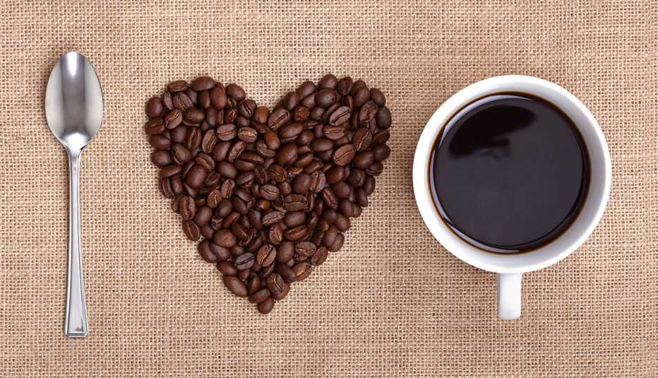

El café es mucho más que una bebida estimulante; es una fuente de beneficios para la salud que ha sido valorada durante siglos. Más allá de su delicioso aroma y sabor, el café aporta antioxidantes y nutrientes que pueden mejorar la energía, la concentración y el bienestar general. Desde potenciar el rendimiento físico hasta contribuir a la protección contra ciertas enfermedades, descubrir los beneficios del café nos invita a disfrutar cada taza con más conocimiento y aprecio.
Además, el café contiene compuestos bioactivos que ayudan a reducir la inflamación y el estrés oxidativo en el cuerpo, dos factores clave en el envejecimiento y el desarrollo de diversas enfermedades. Estudios recientes han encontrado que el consumo moderado de café puede estar asociado con un menor riesgo de diabetes tipo 2, enfermedades cardiovasculares e incluso ciertos tipos de cáncer. Por otro lado, la cafeína no solo mejora el estado de alerta, sino que también puede elevar el ánimo y proteger la salud cerebral, ayudando a mantener la memoria y las funciones cognitivas a lo largo del tiempo.
Aporta antioxidantes: El café es una de las principales fuentes de antioxidantes en la dieta, los cuales ayudan a proteger las células del daño oxidativo y contribuyen a prevenir el envejecimiento celular.
Mejora la concentración y el estado de alerta: Gracias a la cafeína, el café estimula el sistema nervioso central, lo que puede mejorar el enfoque, la memoria y la capacidad de reacción.
Aumenta el rendimiento físico: La cafeína eleva los niveles de adrenalina, lo que ayuda a mejorar el rendimiento durante el ejercicio físico.
Reduce el riesgo de enfermedades neurodegenerativas: El consumo moderado de café se ha relacionado con una menor probabilidad de desarrollar Alzheimer y Parkinson.
Puede ayudar a prevenir la diabetes tipo 2: Estudios han mostrado que quienes consumen café regularmente tienen un menor riesgo de desarrollar esta enfermedad.
Favorece el metabolismo y la quema de grasa: La cafeína puede acelerar el metabolismo y aumentar la oxidación de las grasas.
Mejora el estado de ánimo: El café puede ayudar a combatir la depresión leve y mejorar el bienestar emocional.
Contribuye a la salud del hígado: Puede reducir el riesgo de padecer enfermedades hepáticas como la cirrosis o el hígado graso.
Puede proteger contra ciertos tipos de cáncer: Se ha vinculado el consumo de café con una reducción en el riesgo de cáncer de hígado y colorrectal.
Promueve la interacción social: Más allá de lo físico, el café es una bebida que fomenta encuentros, conversaciones y momentos de conexión entre personas.
Estos son solo 10 de los muchos beneficios que el café ofrece. Hemos seleccionado los principales para que puedas conocer cómo esta bebida puede impactar positivamente en tu salud y bienestar. Sin embargo, el café tiene aún más propiedades y ventajas que vale la pena descubrir.